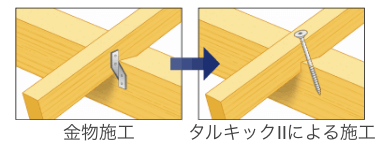

ハシモトハウス住まいづくり
「3つの品質」と「3つの機能」その3
安全・安心の3つの品質 その3
災害・地震にも強いハシモトハウス
ハシモトハウスの長期優良住宅は国が定める基準以上の等級を標準装備するなど、こだわり抜いた設計です。その中でも、耐震性については基準値は等級「2」のところ、等級「3」を準備しています。
ハザードマップの活用について
私たちは危険な地域での街づくりは行いません。ハザードマップ等により、地震、洪水、土砂災害の自然災害によるリスクを排除し、お住まいいただく方の生命、財産を守ります。
一生に一度の買い物だから
ハシモトハウスは災害・地震に強い住宅を
大きな地震や、繰り返し発生する地震から住まう方の生命・財産を守ります。
耐震等級とは、地震時の構造躯体の強度を示します。
震度7の地震が2度観測された平成28年度熊本地震の調査
(「熊本地震における建築物被害の原因分析を行う委員会）
では、「耐震等級3の住宅は大きな損傷はみられず、大部分が無被害であった」と報告されています。
また、繰り返し発生する地震には耐震性能だけでは守り切れず、地震エネルギーを吸収し、揺れを低減する制震装置も必要と考えます。
政府の地震調査委員会は、南海トラフ巨大地震が今後30年以内に発生する確率を70～80％と発表しています。
(地震調査委員会「南海トラフで発生する地震」)
ハシモトハウスはいつか来る大地震に備えるため、「耐震等級3」＋「制振」の最高級の備えをしています。
年々増加する豪雨災害は河川から離れた市街地でも「内水氾濫」として発生し、私達の生活を脅かしています。
政府は不動産会社に対し、相次ぐ水害被害の対応として、ハザードマップをもちいた水害リスクの説明を
義務付け、取引する土地について、水害の危険性を消費者が把握するように促しています。
当社は、まずハザードマップを活用し、災害エリアでの街づくりを行いません。また、建物の敷地を盛り土し、
道路面より高くすることで万が一の浸水を防ぐなど、備えを行っております。
当社はハザードマップに沿った安心・安全な街づくりは当然のこと、お客様の財産である住宅が水害にあうリスクを低減する備えをしています。
-
ハザードマップを活用し、浸水エリアでは街づくりを行いません。
-
敷地も盛土することで敷地全体を道路面より高くしています。
-
基礎部分のコンクリートの継ぎ目から床下浸水を防ぐため、防水シートをコンクリート接着部分に施工しています。
※物件によって仕様が異なり明日。詳しくは係員にお尋ねください。
-
その1:
当社は暴風時に飛んでくるものから窓を守るために、 1階の雨戸・シャッターはもちろん、2階の窓にも 雨戸や格子を設置します。(施工例／京都市左京区静市市原) -
 その2:
屋根が吹きとばされることのない様、高い引抜き強度の 専用ビスを使用して、屋根を強く引き締めています。
※物件によって仕様が異なり明日。詳しくは係員にお尋ねください。